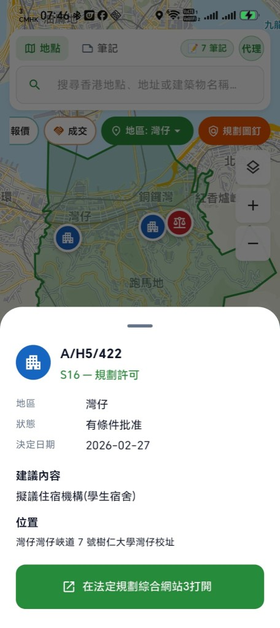
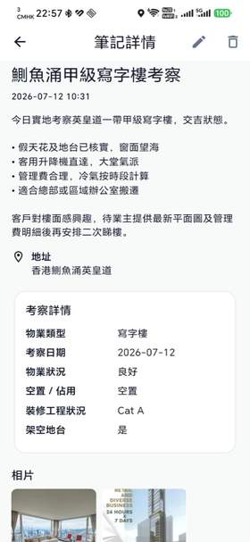
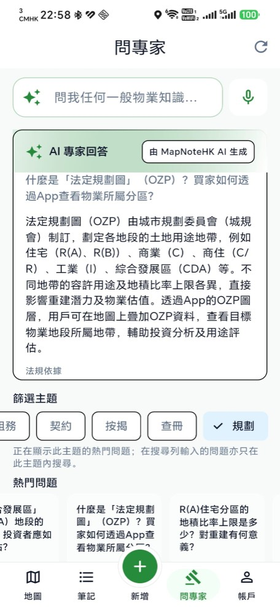
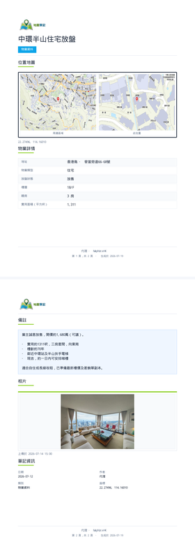
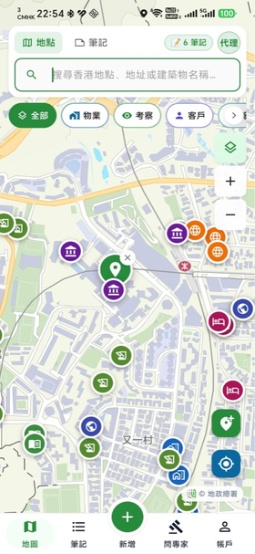
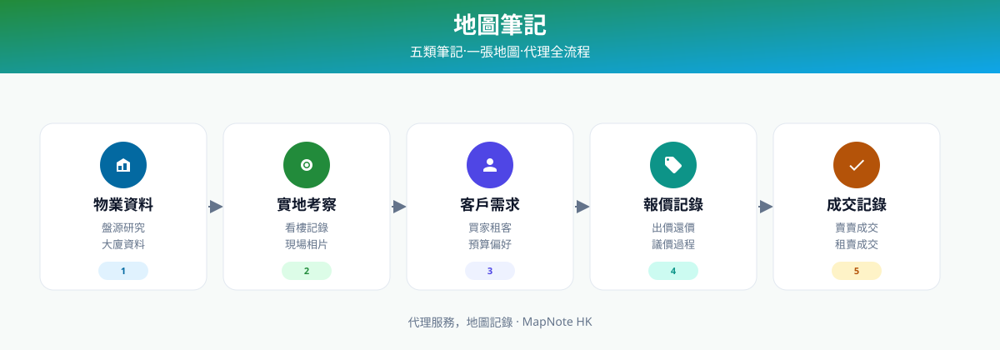

規劃申請地圖查閱
地圖上顯示城規會申請位置，點選即可開啟法定規劃綜合網站3。

免費功能 · 所有用戶
地圖上直接睇規劃申請位置，一鍵開啟法定規劃綜合網站3，無需再逐個搜尋。
實際場景（物業代理 / 投資者）
跟客睇 industrial 盤，即刻知道附近有無 height relaxation 或用途更改申請，唔使再開 browser 逐個搜，現場判斷更快、更準。
產品預覽
以下截圖展示 MapNoteHK 如何把地圖、筆記、規劃申請與 AI 整合，減少代理日常工作中來回切換工具的時間。
地圖上顯示城規會申請位置，點選即可開啟法定規劃綜合網站3。

考察相片、物業文件唔使再散落相簿或 WhatsApp。

超過 1000 題常見問題，工作途中毋須轉 App 搜尋。

一鍵匯出 PDF 文件，WhatsApp 即 send 予客戶。
常見痛點
對很多地產代理來說，睇樓、跟客和做筆記本來就已經很繁忙；如果相片、PDF、備忘錄和對話又分散在不同 App， 事後要查回重點就會變得更慢、更亂。
現場觀察、照片和備忘錄分散，之後難以完整回想。
臨時要講位置、周邊或物業細節時，搜尋流程太慢。
筆記、地圖與常見問題分散，workflow 不連貫。
附近用途更改或限高申請，事後先知，跟客時已失去先機。
實際場景
相簿、WhatsApp 各自保存，事後難以完整回想現場重點。
MapNoteHK：筆記 + 相片 綁定位置；AI 將零散筆記整理成清晰專業內容 (Premium)。
要開 browser 逐個上法定規劃綜合網站3 搜尋，跟客時來不及查。
MapNoteHK：地圖標記 → 摘要 → 一鍵開啟法定規劃綜合網站3（免費）。
自己砌 PDF 或截圖，品牌感不足，客戶印象大打折扣。
MapNoteHK：一鍵匯出 PDF 文件，WhatsApp 即時分享（Premium）。
核心功能

以地圖為核心，整合多項物業相關圖層，讓你在現場即可掌握地點背景、規劃限制及周邊配套。
物業資料及實地考察筆記可附加相片與 PDF 文件，考察影像、盤紙或規劃文件不再散落相簿或 WhatsApp。
App 已收集超過 1000 題與物業／代理相關問題，讓你在工作過程中可直接透過 AI 協助解答常見問題。
如果你覺得這些功能對你的工作有幫助，歡迎登記使用意向。
登記使用意向筆記模板
MapNoteHK 已按地產代理實際 workflow 設計 5 種筆記模板，由物業資料到成交記錄，全部標記在地圖相應位置。

集中整理盤源與基礎資料。
快速記錄現場觀察與環境重點。
整理買家或租客的要求與偏好。
保留不同階段的報價內容與跟進。
記下成交相關資訊，方便之後回看。
功能分級
登記使用意向即可加入 MVP 測試等候名單；Premium 功能推出時，登記用戶優先獲邀。
| 功能 | MVP 試用 | Premium |
|---|---|---|
| 五類地圖筆記 | ✓ | ✓ |
| 規劃申請地圖 + 法定規劃綜合網站3 連結 | ✓ | ✓ |
| AI 物業問答 | ✓ | ✓ |
| AI 整理筆記內容 | — | ✓ |
| 可分享 PDF 樣本 | — | ✓ |
| 規劃申請通知 | — | ✓ |
登記流程
我們先收集使用意向，了解市場需求後再安排下一輪測試邀請。
留下 Email 及基本資料，選擇你最感興趣的功能。
根據登記人數與功能偏好，優先安排最符合產品定位的代理參與測試。
下一輪 MVP 測試開放時，我們會透過 Email 聯絡你；Premium 功能推出時優先獲邀。
為何現在登記
登記用戶會在下一輪測試開放時優先收到通知。
規劃申請圖層會率先向登記用戶開放試用。
你的功能選擇會幫助我們決定開發優先次序。
AI 整理、PDF、規劃通知推出時，登記用戶優先獲邀。
MapNoteHK 由熟悉香港地產工作流程的團隊開發，目標是減少代理在睇樓、跟客與整理筆記時 來回切換不同工具的時間。我們現正收集首批使用意向，了解有多少代理認同這個方向。
登記意向
填寫以下表格，幫助我們了解有多少地產代理想試用這個工具。這不是下載連結 — 我們會在測試開放時主動聯絡你。
提交即表示你同意我們使用你提供的聯絡資料作測試邀請及產品更新通知。